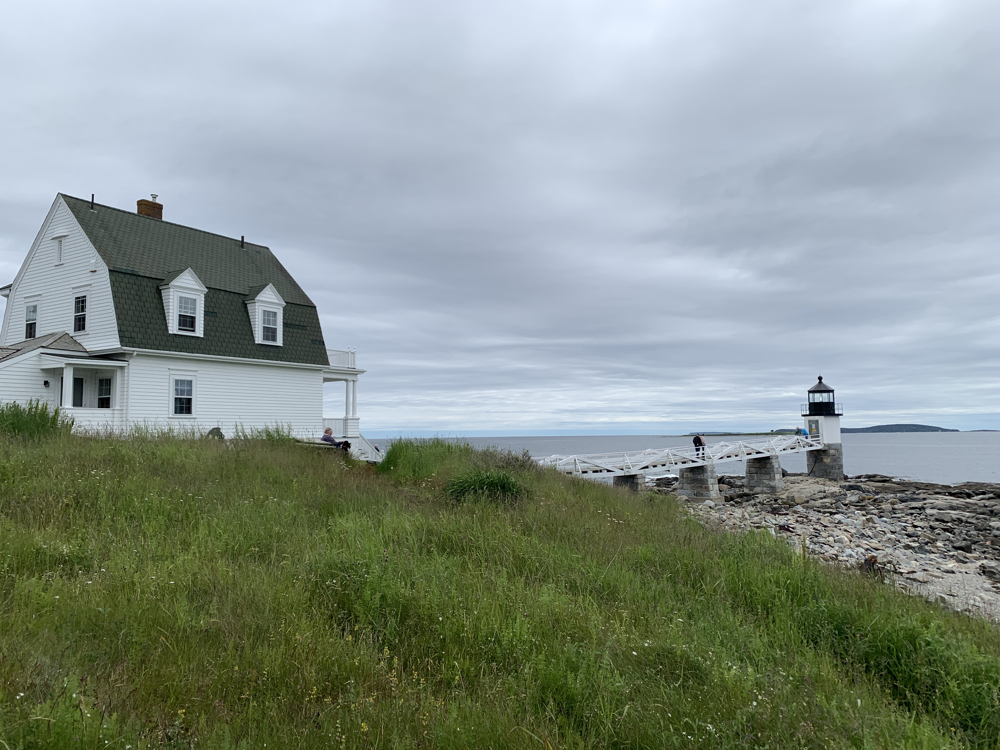
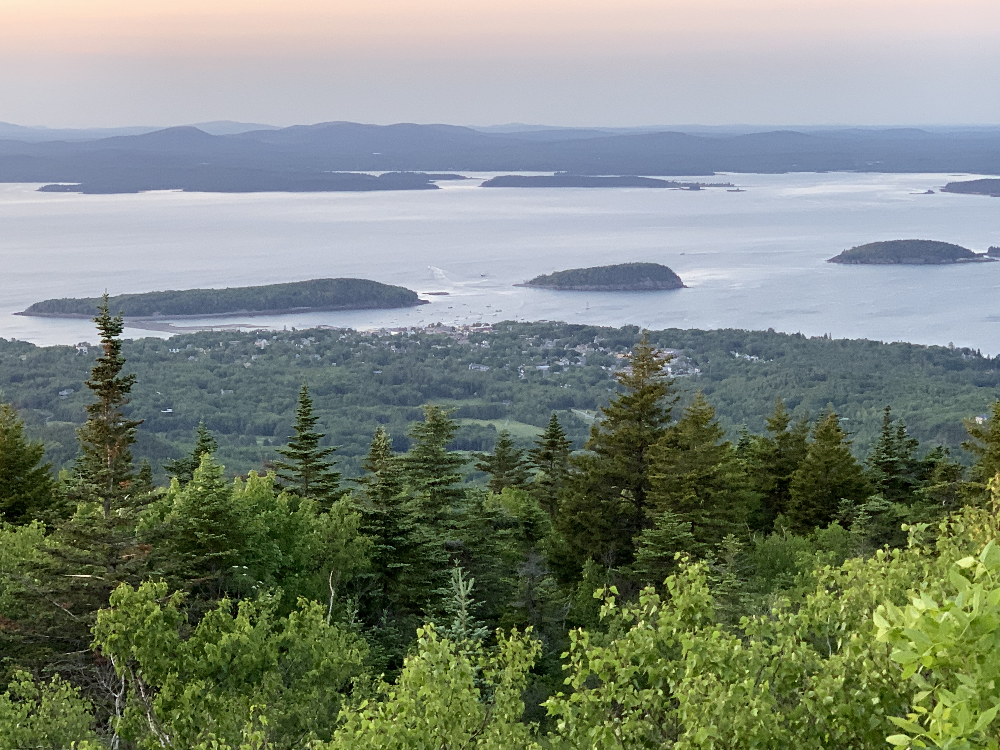
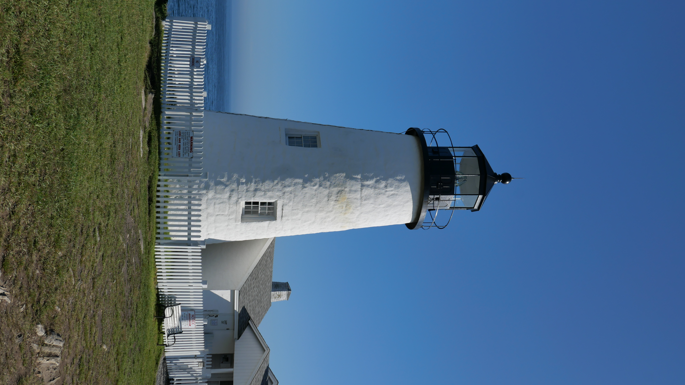

PORTLAND HEAD LIGHT
Historic lighthouse in Cape Elizabeth, Maine. The light station sits on a head of land at the entrance of the primary shipping channel into Portland Harbor, which is within Casco Bay in the Gulf of Maine.

PEMAQUID POINT LIGHTHOUSE
The Pemaquid Point Light is a historic U.S. lighthouse located in Bristol, Lincoln County, Maine, at the tip of the Pemaquid Neck.

MARSHAL POINT LIGHTHOUSE
Marshall Point Light is located at the tip of the St. George peninsula, overlooking both Muscongus and Penobscot Bays. Millions of people all over the world have seen Marshall Point Lighthouse on the big screen, because the lighthouse’s wooden catwalk served as the end of Forrest’s run across the country in the 1994 movie Forrest Gump.

OWLS HEAD LIGHTHOUSE
The Owls Head Light is an active aid to navigation located at the entrance of Rockland Harbor on western Penobscot Bay in the town of Owls Head, Knox County, Maine.
|
IMAGES FROM CAMDEN, ME

Nautical Flags that spell out C A M D E N

Mount Battie, Camden Hills State Park
The Mount Battie Trail offers a relatively short, but very rewarding hike up the south-facing side of the mountain. Although there are some steep pitches, and a bit of scrambling through rock and ledge areas is required, the view over Camden and the islands dotting Penobscot Bay makes this climb well worth the effort. Ascending the stone tower on Mount Battie's 780' summit further enhances the opportunity to soak in the 360-degree panorama..


Little market that is big inside. They have specialty sandwitches made to order or pre-made. The pizza is a very good choice for something different. Really loved the ice cream choices.

McLoons Lobster Shack
315 Island Rd, South Thomaston, ME

Belted Galloways
Belted Galloways grazing in Aldermere’s green pastures
Megunticook Market
Shop in a small market with a wide selection – find custom cut prime beef, fresh local produce, grocery and specialty items, fresh baked goods, prepared dinners, and the best pizza, sandwiches and salads made to order. We are your neighborhood market open 7 days a week!

Bleecker & Greer
Bleecker & Greer began as a full service butcher shop selling Maine raised meats and poultry in 2012. Since then we have grown to include a bakery, cafe, grocery, deli, wine and beer. In 2019 we opened in our new location at the Hoboken Schoolhouse — a beautifully restored 19th century one-room schoolhouse that served the community of Rockport for 80 years.
-- Hike the Ocean Path Trail in Acadia National Park --


Cadillac Mountain - Acadia
Blue Hill Overlook (also known as Sunset Point)
------------- SITES AROUND MAINE -------------
-- Size of images override with a div stylechange -





CAMDEN, MAINE LIFE
CAMDEN STAR AND PINE WITH NAUTICAL FLAGS

Inspired by the original Maine flag’s star and pine and nautical flags spelling out CAMDEN. The flags are painted on a parking lot wall in downtown Camden.
Lazyjack II Schooner
Put in a line break <br> after image list, so images at end of list won't shift to the right by one pixel!





Before/After Comparison Slider -- Click and Drag Bar!